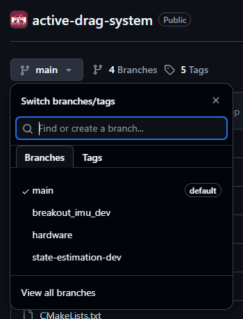

Git/GitHub
So, What Actually is Git?
Git is a protocol invented by Linus Torvalds over 20 years ago originally for the development of the Linux kernel. What it does is provide a form of version control - i.e., a way to control the versions of some piece of software you're working on, and a method for integrating together changes made by multiple people at once. This is fantastic for teams like us, with many developers all working on the same codebase at once; there's a reason why according to the stackoverflow developer survey, git is used and preferred by over 93% of developers worldwide.
Notably, git is just the protocol for managing version control - if you want to actually store the output of it somewhere (read: a shared remote repository), you'll need to either host one yourself, or use a third party service. The most common of these vendors is Github, a service provided by a company now owned by Microsoft. There are alternatives such as Gitlab that are better suited for industrial applications, but for our case, Github works fine.
How Does It Work?
The main concept to wrap your head around to understand git is that of the working tree - a datastructure that represents your codebase, and all the work that has been done to it. Each git "repository" represents a working tree, with a variable number of "branches" that likely have different changes on them. The "repository" itself, to temporarily handwave some nuance, is just a directory containing files that you want to track over time. You can tell if a directory is a git repository by checking for hidden files within it - a git repo will always have a .git hidden directory, usually have a .gitignore file to tell it which files/directories not to track, and sometimes a .gitmodules file to define which submodules are included in the repo (more on that later). The active_drag_system repository has all three of these:
> pwd
/home/username/active_drag_system
> ls -lah
. .. build CMakeLists.txt .git .gitignore .gitmodules hardware include LICENSE notes.txt README.md src tools
>_
.git subdirectory, we'll find that it contains all of git's internal files for tracking the working tree of the repository; generally, you won't have to touch any of this, as git will handle it all for you automatically in the backend when you run commands.
> ls .git
branches config FETCH_HEAD hooks info modules ORIG_HEAD REBASE_HEAD
COMMIT_EDITMSG description HEAD index logs objects packed-refs refs
The .gitignore file is very simple - it is quite literally a verbatim list of exactly which files and subdirectories within the repository not to track. Note the usage of wildcards (*) here - a wildcard following a subdirectory indicates to ignore anything in that directory, while a wildcard followed by a file extension indicates to ignore any file with that extension.
> cat .gitignore
Testing/*
.DS_Store
.vagrant/*
.idea/
.vscode/
CMakeFiles/
cmake_install.cmake
CMakeCache.txt
Makefile
src/CMakeFiles
src/cmake_install.cmake
src/Makefile
build/*
# For PCBs designed using KiCad: https://www.kicad.org/
# Format documentation: https://kicad.org/help/file-formats/
# Temporary files
*.000
*.bak
*.bck
*.kicad_pcb-bak
*.kicad_sch-bak
*-backups
*.kicad_prl
*.sch-bak
*~
_autosave-*
*.tmp
*-save.pro
*-save.kicad_pcb
fp-info-cache
~*.lck
\#auto_saved_files#
# Netlist files (exported from Eeschema)
*.net
# Autorouter files (exported from Pcbnew)
*.dsn
*.ses
# Exported BOM files
*.xml
*.csv
>_
Finally, the .gitmodules file is where the repository recognizes all of the submodules, which are what you're initializing by calling git submodule update before running any build processes.
> cat .gitmodules
[submodule "include/pico-sdk"]
path = include/pico-sdk
url = https://github.com/raspberrypi/pico-sdk
[submodule "include/eigen"]
path = include/eigen
url = https://gitlab.com/libeigen/eigen.git
[submodule "include/pico-logger"]
path = include/pico-logger
url = https://github.com/rocketryvt/pico-logger.git
[submodule "include/FreeRTOS-Kernel"]
path = include/FreeRTOS-Kernel
url = https://github.com/FreeRTOS/FreeRTOS-Kernel.git
[submodule "include/libfixmath"]
path = include/libfixmath
url = https://github.com/PetteriAimonen/libfixmath.git
[submodule "include/libfixmatrix"]
path = include/libfixmatrix
url = https://github.com/PetteriAimonen/libfixmatrix.git
[submodule "include/libfixkalman"]
path = include/libfixkalman
url = https://github.com/sunsided/libfixkalman.git
>_
Now, the other notable thing about a working tree is that it usually has branches. The main one of these is called, well, main - this is where the "core" version of whatever software you're keeping track of exists, and usually isn't directly changed too often. Rather, changes are made on their own separate branches, usually named something related to the changes being made to that version of the code. When ready, if the team agrees that changes on a branch are ready and stable, they'll be "merged" into main via a merge request. These are visible on the GitHub website, simply by clicking the dropdown on main.

//THIS PAGE UNDER CONSTRUCTION, SEE MEETING SLIDES FOR USAGE DOCS FOR NOW